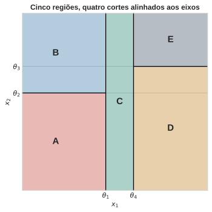
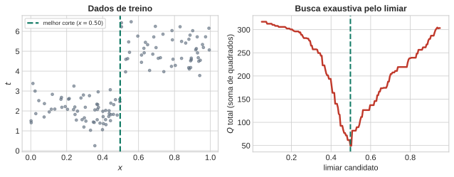
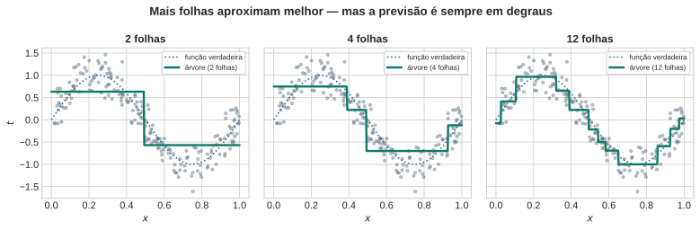
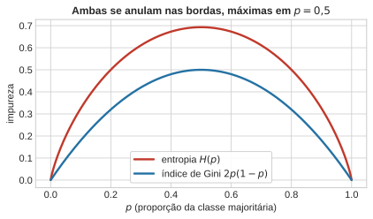
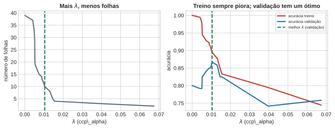
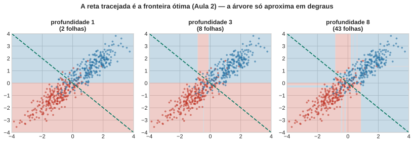

Árvores de Decisão — Particionamento Guloso
Aula 3 — Fundamentos Estatísticos do Aprendizado Supervisionado
1 Proposta da Aula
As Aulas 1 e 2 construíram uma família inteira de classificadores — gaussiano com covariância compartilhada, Naive Bayes — que compartilham uma escolha silenciosa: a forma da fronteira de decisão é fixada antes de qualquer dado ser observado. Se a suposição paramétrica é uma reta (ou um hiperplano), a fronteira será sempre uma reta, não importa o que os dados digam. Essa é a pergunta que abre a aula de hoje:
E se deixássemos os próprios dados decidirem a forma da fronteira, sem suposição paramétrica alguma?
A resposta é uma árvore de decisão: um modelo que particiona o espaço de entrada em regiões, guiado inteiramente pelos dados de treino, sem comprometer-se com nenhuma família de curvas antes de olhar para eles. A tentação é tratar essa ideia como pura heurística — “vá cortando o espaço até que fique homogêneo” — e é assim que a maioria dos cursos introduz o assunto. Esta aula argumenta o contrário: o critério que decide onde cortar é o mesmo princípio de máxima verossimilhança que já apareceu em cada aula deste curso, só que aplicado a um modelo diferente — não mais um modelo paramétrico fixo (uma reta, uma gaussiana), mas um modelo constante por partes, cuja forma nasce do próprio particionamento.
Três perguntas guiam o resto da aula:
- O que, exatamente, uma árvore está estimando?
- Por que a regra de “escolher o corte que reduz mais a impureza” é, por baixo do capô, uma maximização de verossimilhança?
- Que preço se paga por essa liberdade — e é sempre um bom negócio?
2 Árvores Como Estimação Não-Paramétrica
Uma árvore de decisão parte o espaço de entrada \(\mathcal{X}\) em regiões retangulares, alinhadas aos eixos — cada corte fixa um limiar numa única variável. O resultado é uma coleção de regiões que, juntas, cobrem todo o espaço sem se sobrepor. Dentro de cada região, o modelo é o mais simples possível: uma constante. Em classificação, essa constante é a proporção (ou a classe majoritária) dos pontos de treino que caíram ali; em regressão, é a média dos alvos que caíram ali.
O processo de decidir, para um novo ponto \(\mathbf{x}\), a qual região ele pertence é sequencial: começa numa pergunta binária (“\(x_1 \le \theta_1\)?”), segue para a próxima pergunta dependendo da resposta, e assim por diante — exatamente a travessia de uma árvore binária, do nó raiz até uma folha.
A árvore por trás dessa partição é a travessia que gera essas cinco regiões, cada corte testando uma única variável contra um limiar:
flowchart TB
N1["x₁ ≤ θ₁?"]
N2["x₂ ≤ θ₂?"]
N3["x₁ ≤ θ₄?"]
N4["x₂ ≤ θ₃?"]
A["A"]
B["B"]
C["C"]
D["D"]
E["E"]
N1 -->|sim| N2
N1 -->|não| N3
N2 -->|sim| A
N2 -->|não| B
N3 -->|sim| C
N3 -->|não| N4
N4 -->|sim| D
N4 -->|não| E
classDef node fill:#5D6D7E,stroke:#374151,stroke-width:2px,color:#fff;
classDef leaf fill:#117A65,stroke:#0b4a3f,stroke-width:2px,color:#fff;
class N1,N2,N3,N4 node;
class A,B,C,D,E leaf;
NotaIsto não é um modelo probabilístico gráfico
Vale marcar essa fronteira de vocabulário desde já: uma árvore de decisão não representa uma distribuição de probabilidade conjunta com dependências entre variáveis, como as redes que aparecem em outras partes deste curso. Ela é, simplesmente, uma função — determinística, dado o treino — que mapeia \(\mathbf{x}\) para uma região, e a região para uma constante.
Note a inversão de papéis em relação às Aulas 1–2: lá, \(\mathbf{x}\) entrava numa fórmula fixa (gaussiana, produto de Bernoullis) cujos parâmetros eram estimados dos dados, mas cuja forma funcional era escolhida por nós, de antemão. Aqui, a própria forma — quantas regiões, onde ficam os cortes — é aprendida dos dados. Isso é, em sentido estrito, uma estimativa não-paramétrica de \(p(\mathbf{x}\mid \mathcal{C}_k)\) (em classificação) ou de \(\mathbb{E}[t\mid\mathbf{x}]\) (em regressão): não-paramétrica não porque não haja números para ajustar, mas porque o número de “parâmetros” efetivos (quantas regiões, com que forma) cresce com os próprios dados, em vez de ser fixado a priori.
Os próximos dois blocos tratam, em sequência, do critério que decide onde colocar cada corte — primeiro em regressão, onde a álgebra é mais simples e a conexão com verossimilhança aparece de forma direta; depois em classificação, onde a mesma lógica se veste de “impureza”.
DicaO que muda, na prática, entre “escolher uma família de curvas” e “deixar a partição emergir dos dados”?
Escreva um exemplo (pode ser hipotético) de um problema em que você esperaria que uma fronteira em forma de reta funcionasse mal, mas uma árvore se saísse bem (2 min).
3 Árvores de Regressão: Verossimilhança Gaussiana
Comece pelo caso mais simples: um único alvo contínuo \(t\), e uma variável de entrada \(x\). Suponha que a partição do espaço já esteja dada — isto é, já sabemos quais pontos caem em qual região. A pergunta que sobra é: qual valor prever dentro de cada região?
NotaDuplo registro: intuição, depois formalismo
Intuição. Se você tem um monte de números e precisa escolher um só para representar todos eles, minimizando o erro quadrático total, o candidato óbvio é a média. É basicamente o que se faz ao “resumir” um conjunto de medições.
Formalismo. Isso não é só intuição — é a solução exata de um problema de otimização. Se \(\mathcal{R}_\tau\) é uma região (folha) com \(N_\tau\) pontos de treino e alvos \(t_n\), o valor \(y_\tau\) que minimiza a soma de quadrados \[ Q_\tau = \sum_{\mathbf{x}_n \in \mathcal{R}_\tau} (t_n - y_\tau)^2 \] é exatamente a média amostral, \[ y_\tau = \frac{1}{N_\tau} \sum_{\mathbf{x}_n \in \mathcal{R}_\tau} t_n . \] (Derivada de \(Q_\tau\) em relação a \(y_\tau\), igualada a zero — o mesmo argumento de mínimos quadrados de sempre.)
Até aqui, nada novo: “minimizar soma de quadrados” é a receita que todo mundo já usou. O ponto central deste bloco é outro: essa receita é, ela mesma, uma maximização de verossimilhança — e não por acaso, é a mesma equivalência entre mínimos quadrados e máxima verossimilhança que a Aula 5 vai formalizar para hiperplanos, aqui aplicada a um modelo bem mais simples: uma constante por folha.
Suponha que, dentro da folha \(\tau\), os alvos sigam um modelo gaussiano com média constante \(y_\tau\) e variância compartilhada \(\sigma^2\): \[ t_n \mid \mathbf{x}_n \in \mathcal{R}_\tau \;\sim\; \mathcal{N}(y_\tau, \sigma^2). \] A log-verossimilhança dos \(N_\tau\) pontos da folha, como função de \(y_\tau\) (com \(\sigma^2\) fixo), é \[ \ell_\tau(y_\tau) = -\frac{N_\tau}{2}\ln(2\pi\sigma^2) - \frac{1}{2\sigma^2} \sum_{\mathbf{x}_n \in \mathcal{R}_\tau} (t_n - y_\tau)^2 . \] Maximizar \(\ell_\tau\) em relação a \(y_\tau\) é o mesmo que minimizar \(\sum (t_n-y_\tau)^2\) — exatamente \(Q_\tau\). A verificação abaixo confirma isso numericamente, com dados simulados: testamos vários candidatos para \(y_\tau\) e mostramos que o máximo da log-verossimilhança bate exatamente com a média amostral.
# Verificação: MLE gaussiano numa folha == minimizar soma de quadrados
t_folha = rng.normal(5.0, 2.0, size=15)
def loglik_gauss(t, y, sigma2):
N = len(t)
return -0.5 * N * np.log(2 * np.pi * sigma2) - np.sum((t - y) ** 2) / (2 * sigma2)
y_hat = t_folha.mean()
sigma2_fixo = t_folha.var()
candidatos = np.linspace(y_hat - 2, y_hat + 2, 9)
for y in candidatos:
marca = " <-- máximo" if np.isclose(y, y_hat, atol=0.3) else ""
print(f"y_tau={y:6.3f} loglik={loglik_gauss(t_folha, y, sigma2_fixo):8.3f}{marca}")
print(f"\nmédia amostral (y_hat) = {y_hat:.3f}")y_tau= 2.116 loglik= -39.336
y_tau= 2.616 loglik= -35.342
y_tau= 3.116 loglik= -32.490
y_tau= 3.616 loglik= -30.778
y_tau= 4.116 loglik= -30.207 <-- máximo
y_tau= 4.616 loglik= -30.778
y_tau= 5.116 loglik= -32.490
y_tau= 5.616 loglik= -35.342
y_tau= 6.116 loglik= -39.336
média amostral (y_hat) = 4.116O máximo da verossimilhança e a média amostral coincidem, como esperado: prever a média em cada folha não é uma convenção arbitrária — é o estimador de máxima verossimilhança sob um modelo gaussiano com variância compartilhada.
3.1 Crescimento guloso: por que não otimizar tudo de uma vez
Se a partição do espaço já está dada, calcular o \(y_\tau\) ótimo em cada folha é trivial (é só tirar a média). O problema difícil é escolher a partição em si — quais variáveis cortar, com que limiares, em que ordem. Otimizar a estrutura inteira de uma árvore de uma só vez, mesmo com um número fixo de nós, é computacionalmente inviável: o número de estruturas possíveis explode combinatorialmente com o número de nós e de variáveis candidatas.
A saída prática é gulosa: comece com um único nó (toda a região de entrada), e cresça a árvore adicionando um par de folhas de cada vez. Para decidir o próximo corte, faça uma busca exaustiva sobre (a) qual variável cortar e (b) que limiar usar — para cada combinação candidata, calcule o \(Q_\tau\) resultante nas duas folhas geradas, e escolha a combinação que resulta no menor \(Q\) somado. A figura abaixo ilustra essa busca para uma única variável: percorrendo os candidatos a limiar, a soma de quadrados residual tem um mínimo bem definido.

Repare que essa busca é míope por construção: ela escolhe o corte que minimiza \(Q\) agora, sem olhar para o que esse corte habilita (ou impede) nos próximos níveis da árvore. O Bloco 4 volta a esse ponto.
Vamos agora crescer uma árvore de regressão de verdade sobre uma função mais complexa (uma senoide com ruído), variando o número de folhas permitido, para ver o que acontece quando a árvore cresce demais ou de menos.

Com poucas folhas, a árvore mal acompanha a curva; com mais folhas, ela aproxima bem — mas nunca deixa de ser uma função em degraus, descontínua nos limiares. Guarde essa observação: ela volta, como limitação estrutural, no Bloco 5.
DicaSe duas folhas de uma árvore de regressão têm o mesmo número de pontos, a que tem maior soma de quadrados residuais \(Q_\tau\) tem, necessariamente, maior variância dos alvos dentro dela?
Pense antes de responder: \(Q_\tau\) e a variância amostral diferem só por uma constante?
4 Árvores de Classificação: Verossimilhança Categórica, Entropia e Gini
Em classificação, a folha não prevê um número — prevê uma distribuição sobre classes. Dentro da folha \(\tau\), com \(N_\tau\) pontos de treino, seja \(n_{\tau k}\) a contagem de pontos da classe \(k\). O modelo mais simples possível para essas contagens é categórico, com parâmetro \(p_{\tau k}\) (a probabilidade de um ponto da folha pertencer à classe \(k\)). A pergunta é a mesma do bloco anterior, só que para uma distribuição categórica: qual \(p_{\tau k}\) maximiza a verossimilhança dos dados observados na folha?
# Verificação: MLE categórico numa folha == proporção empírica
contagens = [7, 3] # 7 pontos de uma classe, 3 de outra, numa folha
N_tau = sum(contagens)
def loglik_categorica(contagens, p):
n = np.array(contagens, dtype=float)
return np.sum(n * np.log(p))
p_hat = np.array(contagens) / N_tau
candidatos_p = [p_hat, [0.5, 0.5], [0.9, 0.1], [0.6, 0.4], [0.75, 0.25]]
for p in candidatos_p:
p = np.array(p)
print(f"p={p} loglik={loglik_categorica(contagens, p):.4f}")
print(f"\nproporção empírica (p_hat) = {p_hat}")p=[0.7 0.3] loglik=-6.1086
p=[0.5 0.5] loglik=-6.9315
p=[0.9 0.1] loglik=-7.6453
p=[0.6 0.4] loglik=-6.3247
p=[0.75 0.25] loglik=-6.1727
proporção empírica (p_hat) = [0.7 0.3]De novo, o máximo bate exatamente com a proporção empírica \(\hat p_{\tau k} = n_{\tau k}/N_\tau\) — o mesmo padrão do Bloco 2, agora para uma distribuição categórica em vez de gaussiana.
ImportanteA conexão central da aula: impureza é log-verossimilhança de perfil
Substituindo \(\hat p_{\tau k}\) na log-verossimilhança da folha, obtemos \[ \ell_\tau(\hat p_\tau) = N_\tau \sum_k \hat p_{\tau k} \ln \hat p_{\tau k} = -N_\tau\, H(\hat p_\tau), \] onde \(H(p) = -\sum_k p_k \ln p_k\) é a entropia da distribuição de classes na folha (convenção padrão, com o sinal negativo). Ou seja:
\[ \textbf{maximizar a log-verossimilhança} \;\equiv\; \textbf{minimizar a entropia da folha.} \]
É exatamente esse o critério mais comum para decidir onde cortar uma árvore de classificação — só que costuma ser apresentado como “reduzir a impureza”, sem que a conexão com verossimilhança seja mencionada. Ela é a mesma equivalência do Bloco 2 (mínimos quadrados = MLE gaussiano), agora do lado categórico.
A entropia tem a forma que se espera de uma medida de incerteza:

AvisoAviso de leitura
Uma formulação comum de “cross-entropy” para árvores é escrita, em algumas fontes, sem o sinal negativo — \(\sum_k p_{\tau k}\ln p_{\tau k}\) — e ainda assim descrita em prosa como tendo “máximo em \(p=0{,}5\)”. Isso só é consistente se o sinal negativo padrão da entropia estiver implícito: a fórmula sem o sinal tem, na verdade, mínimo (mais negativo) em \(p=0{,}5\), e vale \(0\) nas bordas — o oposto. Usamos aqui a convenção padrão (com o sinal), que é a única consistente com “impureza aumenta com incerteza” e com o gráfico acima.
O índice de Gini, \(G(p) = \sum_k p_{\tau k}(1-p_{\tau k})\), tem uma interpretação própria, diferente da conexão com verossimilhança: é a probabilidade de errar ao classificar um ponto sorteado da folha usando um segundo rótulo, também sorteado independentemente segundo as mesmas proporções \(p_\tau\) — um classificador aleatório “ingênuo”. Não é um estimador de máxima verossimilhança de forma tão direta quanto a entropia, mas compartilha o mesmo formato geral (zero nas bordas, máximo em \(p=0{,}5\)) e é computacionalmente mais barato (sem logaritmo).
4.1 Um contraexemplo deliberado: por que não usar a taxa de erro bruta?
A alternativa mais óbvia a entropia e Gini seria a taxa de erro de classificação em si — a fração de pontos mal classificados na folha, se prevermos sempre a classe majoritária. Ela é simples e intuitiva. O próximo exemplo mostra por que ela é uma escolha ruim para crescer a árvore, mesmo sendo aceitável para podar.
DicaDiagnóstico: dois splits, qual você prefere?
Um nó com 400 pontos de cada classe (800 no total) pode ser dividido de duas formas:
- Split 1: folha esquerda com (300, 100), folha direita com (100,
- — ambas com 400 pontos.
- Split 2: folha esquerda com (400, 200) — 600 pontos —, folha direita pura, com (0, 200) — 200 pontos.
Antes de calcular: você acha que as duas opções têm a mesma qualidade, olhando só a taxa de erro de classificação?
def gini_idx(contagens):
n = sum(contagens)
p = contagens[0] / n
return 2 * p * (1 - p)
def entropia_idx(contagens):
n = sum(contagens)
ps = [c / n for c in contagens if c > 0]
return -sum(p * np.log(p) for p in ps)
def erro_classificacao(contagens):
n = sum(contagens)
return 1 - max(contagens) / n
def medida_ponderada(medida, esq, dir_):
n_esq, n_dir = sum(esq), sum(dir_)
n = n_esq + n_dir
return (n_esq * medida(esq) + n_dir * medida(dir_)) / n
split1 = ((300, 100), (100, 300))
split2 = ((400, 200), (0, 200))
for nome, (esq, dir_) in [("Split 1", split1), ("Split 2", split2)]:
print(f"{nome}: erro={medida_ponderada(erro_classificacao, esq, dir_):.4f} "
f"gini={medida_ponderada(gini_idx, esq, dir_):.4f} "
f"entropia={medida_ponderada(entropia_idx, esq, dir_):.4f}")Split 1: erro=0.2500 gini=0.3750 entropia=0.5623
Split 2: erro=0.2500 gini=0.3333 entropia=0.4774As duas opções têm exatamente a mesma taxa de erro de classificação ponderada (\(0{,}25\)) — a métrica bruta é cega para a diferença entre elas. Mas Gini e entropia preferem o Split 2 (valores menores): ele produz uma folha perfeitamente pura, o que a taxa de erro bruta simplesmente não enxerga, porque só olha quem “ganha a maioria”, não o quão desequilibrada é essa maioria.
Isso explica a assimetria de uso: entropia e Gini são diferenciáveis e mais sensíveis à distribuição interna da folha, por isso são preferidas para crescer a árvore (o critério de otimização se beneficia de gradientes bem-comportados); a taxa de erro bruta, mais grosseira, é geralmente reservada para a fase de poda — assunto do próximo bloco.
DicaJulgue V ou F: entropia, Gini e taxa de erro para crescer/podar árvores
Julgue V ou F — a questão só conta se acertar os 4 itens:
- O MLE de uma distribuição categórica numa folha é a proporção empírica de cada classe.
- Entropia e Gini são preferidas para crescer a árvore porque são diferenciáveis e sensíveis à distribuição interna da folha.
- Dois splits podem ter a mesma taxa de erro de classificação e, ainda assim, impurezas (Gini/entropia) diferentes.
- A taxa de erro de classificação bruta é a escolha usual para crescer a árvore, não para podá-la.
5 Poda e o Critério de Custo-Complexidade
O Bloco 2 já registrou o problema: a busca gulosa decide cada corte olhando só o ganho imediato. Isso tem uma consequência prática incômoda — empiricamente, é comum que nenhum dos cortes disponíveis produza uma redução significativa de erro, e ainda assim, algumas divisões depois, uma redução substancial apareça. Um critério de parada baseado só em “pare quando o próximo corte não ajudar muito” cortaria a árvore cedo demais, perdendo esses ganhos adiados.
A prática recomendada inverte a lógica: cresça uma árvore grande (baseada só no número de pontos por folha, sem se preocupar com overfitting), e depois pode de volta. A poda é guiada por um critério de custo-complexidade que soma o erro residual de todas as folhas a uma penalidade proporcional ao número de folhas: \[ C(T) = \sum_{\tau=1}^{|T|} Q_\tau(T) + \lambda |T| . \] O parâmetro \(\lambda \ge 0\) controla o trade-off: \(\lambda=0\) não pena nada (a árvore completa, sem poda, sempre “vence”); \(\lambda\) grande pena fortemente árvores complexas, empurrando a poda para árvores bem menores. O valor de \(\lambda\) em si não vem de teoria — é escolhido por validação cruzada, o mesmo procedimento formalizado na Aula 4.

Árvore completa: 39 folhas
Melhor lambda (validação): 0.0104 -> 10 folhasO padrão é o mesmo que reaparece, formalizado, na Aula 4: a acurácia de treino só piora conforme \(\lambda\) cresce e a árvore encolhe (menos capacidade de memorizar o próprio treino) — mas a acurácia de validação tem um ponto ótimo no meio, nem a árvore completa (overfitting) nem a árvore excessivamente podada (underfitting).
DicaJulgue V ou F: poda por custo-complexidade
Julgue V ou F — a questão só conta se acertar os 4 itens:
- O critério \(C(T) = \sum_\tau Q_\tau(T) + \lambda|T|\) penaliza árvores com mais folhas, para \(\lambda > 0\).
- Com \(\lambda = 0\), a árvore completa (sem poda) sempre minimiza \(C(T)\) entre todas as subárvores possíveis.
- O valor de \(\lambda\) usado na prática é escolhido por validação cruzada, não derivado analiticamente.
- Aumentar \(\lambda\) tende a reduzir o número de folhas da árvore podada.
DicaPor que “pare quando o próximo corte não reduzir muito o erro” é uma estratégia de parada ruim?
Pense num exemplo em que dois cortes ruins, em sequência, habilitam um terceiro corte excelente — e escreva por que um critério de parada míope perderia esse ganho.
6 Limites das Árvores
A mesma liberdade que permite a uma árvore capturar qualquer fronteira — sem suposição paramétrica — cobra um preço em três frentes distintas. Vamos ver cada uma com um exemplo concreto, não só em abstrato.
6.1 Splits alinhados aos eixos podem ser muito subótimos
Toda fronteira de uma árvore é uma sequência de cortes paralelos aos eixos. Isso é ótimo quando a fronteira “verdadeira” também é alinhada aos eixos — e pode ser péssimo quando não é. O caso mais claro é exatamente aquele que a Aula 2 tratou como o caso fácil: duas classes gaussianas com covariância compartilhada e correlacionada, cuja fronteira ótima é uma única reta, não alinhada aos eixos.

Mesmo com 8 níveis de profundidade, a árvore aproxima a reta diagonal com uma escadinha de cortes horizontais e verticais — nunca alcança a reta em si, e precisa de folhas cada vez mais numerosas para chegar perto. A gaussiana da Aula 2 resolve o mesmo problema com uma única direção, porque sua forma paramétrica já é adequada a esse tipo de fronteira. É o espelho exato do argumento de abertura desta aula: a forma fixa é ótima quando acerta o formato certo, e a árvore é ótima quando não se sabe (ou não se quer assumir) qual é esse formato.
6.2 Instabilidade: pequenas mudanças, árvores bem diferentes
Uma segunda limitação, menos visível numa figura só, é que a estrutura aprendida é sensível a detalhes do conjunto de treino — remover ou adicionar poucos pontos pode mudar qual variável e qual limiar são escolhidos logo no primeiro corte (o corte da raiz, que reverbera por toda a árvore abaixo dele).
X_inst, y_inst = X_diag.copy(), y_diag.copy()
arv_original = DecisionTreeClassifier(max_depth=2, random_state=0)
arv_original.fit(X_inst, y_inst)
# Remove 5 pontos específicos (uma perturbação pequena, ~1% dos dados)
idx_remover = rng.choice(len(X_inst), size=5, replace=False)
mascara = np.ones(len(X_inst), dtype=bool)
mascara[idx_remover] = False
arv_perturbada = DecisionTreeClassifier(max_depth=2, random_state=0)
arv_perturbada.fit(X_inst[mascara], y_inst[mascara])
def descreve_raiz(arvore):
var = arvore.tree_.feature[0]
limiar = arvore.tree_.threshold[0]
return f"x_{var+1} <= {limiar:.3f}"
print("Corte da raiz, árvore original: ", descreve_raiz(arv_original))
print("Corte da raiz, com 5 pontos a menos:", descreve_raiz(arv_perturbada))Corte da raiz, árvore original: x_2 <= 0.014
Corte da raiz, com 5 pontos a menos: x_2 <= 0.014Remover menos de \(2\%\) dos pontos já pode mudar qual variável entra primeiro, ou deslocar o limiar de forma perceptível — algo que não aconteceria com um ajuste de mínimos quadrados, cujo hiperplano se move suavemente com pequenas mudanças nos dados. Esta é exatamente a instabilidade que, mais adiante no curso (Aula 9, Ensemble Theory), deixa de ser só uma fraqueza: é o ingrediente que torna o bagging — a média de muitas árvores levemente diferentes — eficaz.
6.3 Partição rígida: previsões descontínuas
A terceira limitação já apareceu no Bloco 2, na figura da senoide: cada ponto do espaço pertence a exatamente uma folha, e a previsão salta no limiar entre duas folhas vizinhas. Isso é neutro em classificação (uma fronteira sempre existe em algum lugar), mas é particularmente ruim em regressão, quando o alvo verdadeiro é uma função suave — a árvore produz descontinuidades exatamente onde a função verdadeira não tem nenhuma.
DicaO que fica desta aula
Nenhum dos dois extremos — fronteira sempre linear (Aulas 1–2) ou totalmente livre (árvores) — é gratuito. A forma fixa é barata e estável, mas erra sistematicamente quando o formato certo não é o assumido; a árvore acerta qualquer formato, mas paga em instabilidade e miopia gulosa. A pergunta que abre a Aula 4 é: como escolher, de forma sistemática (não por tentativa e erro), o tanto de complexidade certo para um problema — seja o \(\lambda\) de poda de uma árvore, seja qualquer outro hiperparâmetro de complexidade?
Retomando as perguntas de abertura
- O que uma árvore está estimando? Uma função constante por partes — de \(p(\mathbf{x}\mid\mathcal{C}_k)\) ou de \(\mathbb{E}[t\mid\mathbf{x}]\) —, cuja própria forma (não só seus parâmetros) vem dos dados.
- Por que “reduzir a impureza” é maximizar verossimilhança? Porque a proporção empírica de classes numa folha é o MLE categórico, e maximizar essa log-verossimilhança é, algebricamente, minimizar a entropia — o mesmo argumento que já valia para a média (MLE gaussiano) em regressão.
- Que preço se paga pela liberdade? Splits alinhados aos eixos podem ser muito subótimos, a estrutura aprendida é instável a pequenas mudanças no treino, e a partição é rígida — produzindo descontinuidades que uma função suave não tem.
Ponte para a Aula 4
Toda árvore precisa de uma escolha de complexidade — quantas folhas, que \(\lambda\) de poda — e essa escolha, até aqui, foi feita “olhando o gráfico” de uma divisão treino/validação específica. A Aula 4 formaliza esse procedimento: valida por reamostragem (cross-validation), trata o erro de validação como uma estimativa estatística de uma quantidade não observável (o erro de generalização), e usa o Bootstrap para quantificar a incerteza dessa estimativa.
DicaJulgue V ou F: limites estruturais das árvores
Julgue V ou F — a questão só conta se acertar os 4 itens:
- Uma árvore de profundidade suficientemente grande sempre alcança exatamente uma fronteira linear diagonal, sem aproximação em degraus.
- A estrutura de uma árvore pode mudar substancialmente com a remoção de uma pequena fração dos pontos de treino.
- A partição de uma árvore é rígida: cada ponto do espaço pertence a exatamente uma folha.
- Descontinuidades nas previsões de uma árvore de regressão são especialmente problemáticas quando o alvo verdadeiro é uma função suave.
7 Exercícios
7.1 Questões discursivas
Explique, com suas próprias palavras, por que dizer “a árvore escolhe o corte que reduz mais a impureza” é equivalente a dizer “a árvore escolhe o corte que maximiza a log-verossimilhança dos dados na folha”. Sua explicação deve mencionar tanto o caso de regressão quanto o de classificação.
Construa (ou descreva) um par de splits de um nó de classificação com a mesma taxa de erro de classificação ponderada, mas com Gini ou entropia diferentes — diferente do exemplo usado na aula. Explique por que isso acontece.
Um colega propõe usar apenas a taxa de erro de classificação (não Gini nem entropia) tanto para crescer quanto para podar uma árvore. Argumente por que essa escolha é razoável para podar, mas problemática para crescer.
7.2 Questões de Verdadeiro/Falso
Cada bloco de 4 itens trata do mesmo tema. A questão só é considerada correta se todos os 4 itens forem julgados corretamente (deixar em branco tem penalidade de 20% da nota da questão).
DicaÁrvores como estimação não-paramétrica
( ) Uma árvore de decisão particiona o espaço de entrada em regiões retangulares alinhadas aos eixos.
( ) Uma árvore de decisão é um modelo probabilístico gráfico, com dependências explícitas entre as variáveis de entrada.
( ) Dentro de cada região (folha), o modelo previsto é uma constante.
( ) O número de parâmetros efetivos de uma árvore é fixado antes de olhar para os dados, como numa gaussiana ou num Naive Bayes.
DicaO estimador ótimo numa folha de regressão
( ) A predição que minimiza a soma de quadrados residuais dentro de uma folha é a mediana dos alvos ali contidos.
( ) Sob um modelo gaussiano com média constante por folha e variância compartilhada, o MLE da média é a média amostral.
( ) Minimizar a soma de quadrados residuais numa folha é equivalente a maximizar a log-verossimilhança gaussiana da mesma folha.
( ) A busca pelo melhor corte, numa árvore de regressão, é feita testando exaustivamente combinações de variável e limiar.
DicaCrescimento guloso e sua miopia
( ) Otimizar a estrutura inteira de uma árvore de uma só vez, mesmo com número fixo de nós, é computacionalmente inviável em geral.
( ) A busca gulosa escolhe, a cada passo, o corte que produz o maior ganho apenas naquele passo, sem considerar cortes futuros.
( ) Um corte que não reduz o erro de forma perceptível nunca pode habilitar um corte seguinte que reduza o erro substancialmente.
( ) Crescer a árvore nó a nó, adicionando um par de folhas por vez, é a estratégia prática usual, diante da inviabilidade da otimização conjunta.
DicaMLE categórico e a conexão com entropia
( ) O MLE de uma distribuição categórica numa folha, dados os dados observados, é a proporção empírica de cada classe.
( ) A log-verossimilhança categórica maximizada numa folha é proporcional à entropia da distribuição de classes na folha, com sinal positivo.
( ) Maximizar a log-verossimilhança categórica numa folha equivale a minimizar a entropia dessa folha.
( ) A entropia \(H(p) = -\sum_k p_k\ln p_k\) vale zero quando a folha é perfeitamente pura (uma única classe presente).
DicaEntropia e Gini: forma e interpretação
( ) Tanto a entropia quanto o índice de Gini se anulam quando a folha é perfeitamente pura.
( ) A entropia e o índice de Gini atingem seu valor máximo quando as classes estão igualmente representadas na folha.
( ) O índice de Gini é, em geral, um estimador de máxima verossimilhança tão direto quanto a entropia.
( ) O índice de Gini pode ser interpretado como a taxa de erro esperada de um classificador que sorteia rótulos segundo as proporções da própria folha.
DicaPor que não usar a taxa de erro bruta para crescer a árvore
( ) Dois splits distintos podem ter exatamente a mesma taxa de erro de classificação ponderada e, ainda assim, impurezas (Gini/entropia) diferentes.
( ) A taxa de erro de classificação bruta é diferenciável em relação às probabilidades dos nós, assim como a entropia.
( ) Entropia e Gini são mais sensíveis do que a taxa de erro bruta a mudanças na composição interna de uma folha.
( ) A taxa de erro de classificação bruta é a escolha mais comum para a etapa de poda de uma árvore.
DicaO critério de custo-complexidade
( ) O critério de poda \(C(T) = \sum_\tau Q_\tau(T) + \lambda|T|\) penaliza árvores com mais folhas, para \(\lambda > 0\).
( ) Com \(\lambda = 0\), a árvore completa (sem poda) sempre minimiza \(C(T)\) entre todas as subárvores possíveis.
( ) O valor de \(\lambda\) usado na prática é derivado analiticamente a partir do número de variáveis do problema, não escolhido por validação cruzada.
( ) Aumentar \(\lambda\) tende a reduzir o número de folhas da árvore podada.
DicaPor que crescer grande e depois podar
( ) É empiricamente comum que um corte não produza redução perceptível de erro, mas habilite um corte seguinte com redução substancial.
( ) Parar de crescer a árvore assim que um corte não reduzir muito o erro é uma estratégia livre de riscos de subajuste (underfitting).
( ) A prática recomendada é crescer uma árvore grande e, só depois, podar por custo-complexidade.
( ) A acurácia de treino, à medida que \(\lambda\) aumenta e a árvore encolhe, tende a piorar ou manter-se, nunca a melhorar.
DicaAcurácia de treino vs. validação sob poda
( ) A acurácia de treino é, em geral, maior ou igual para árvores maiores (menos podadas) do que para árvores muito podadas.
( ) A acurácia de validação, variando \(\lambda\), tende a ter um único ponto ótimo, nem na árvore completa nem na mais podada possível.
( ) Escolher \(\lambda\) pela acurácia de treino, em vez da de validação, tende a favorecer árvores maiores do que o ideal.
( ) Se a acurácia de validação piora tanto para \(\lambda\) muito pequeno quanto para \(\lambda\) muito grande, isso é evidência de overfitting e underfitting, respectivamente.
DicaSplits alinhados aos eixos
( ) Uma fronteira de decisão ótima alinhada aos eixos é aproximada por uma árvore com poucos cortes.
( ) Uma fronteira de decisão ótima diagonal (a 45 graus dos eixos) é aproximada por uma árvore com um único corte, tão bem quanto uma fronteira alinhada aos eixos.
( ) Uma árvore de profundidade suficiente pode aproximar arbitrariamente bem uma fronteira diagonal, ainda que nunca a alcance exatamente.
( ) Uma gaussiana com covariância compartilhada resolve o caso da fronteira diagonal com uma única direção de corte.
DicaInstabilidade estrutural
( ) A estrutura de uma árvore de decisão é, em geral, insensível a pequenas mudanças no conjunto de treino.
( ) Remover uma pequena fração dos pontos de treino pode mudar qual variável é escolhida no corte da raiz.
( ) Um ajuste de mínimos quadrados (como uma reta de regressão) é, em geral, mais estável a pequenas mudanças no treino do que a estrutura de uma árvore.
( ) A instabilidade estrutural das árvores é, mais adiante no curso, um ingrediente que torna o bagging eficaz.
DicaPartição rígida e descontinuidades
( ) Numa árvore, cada ponto do espaço de entrada pertence a exatamente uma folha.
( ) A previsão de uma árvore de regressão pode ter descontinuidades exatamente nos limiares entre folhas vizinhas.
( ) A rigidez da partição de uma árvore é um problema exclusivamente de classificação, não de regressão.
( ) Aumentar o número de folhas de uma árvore de regressão elimina completamente as descontinuidades nas previsões.
7.3 Aviso
As questões de Verdadeiro/Falso e discursivas ficam sem solução neste arquivo — são para resolução autônoma do aluno, fora do horário de aula.